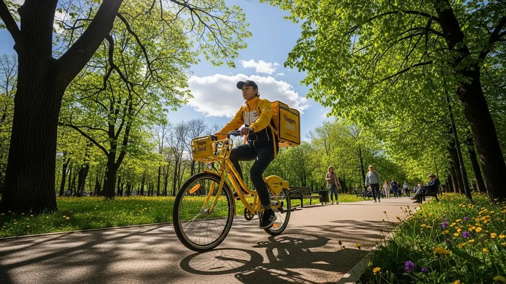
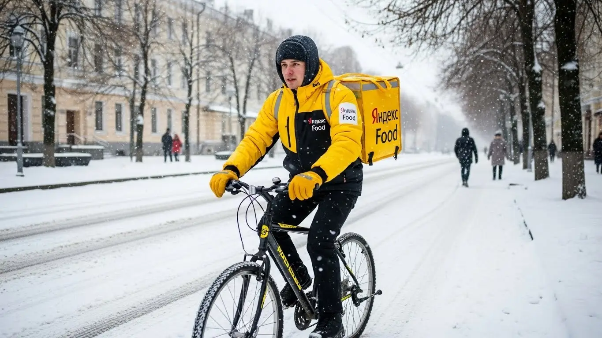
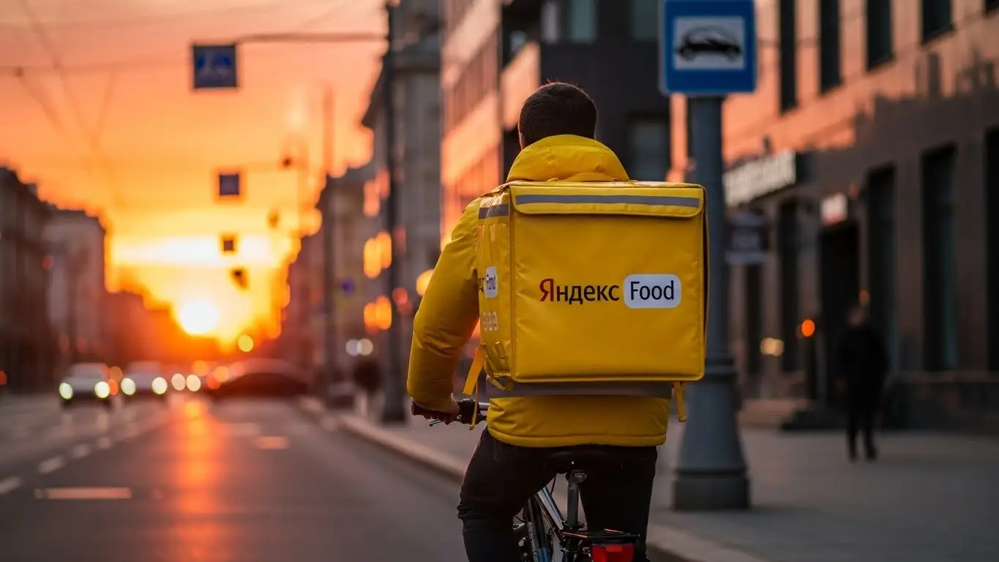

Работа курьером Яндекс Еда в Ижевске: доход и условия в 2025-2026

- Работа курьером Яндекс Еды в Ижевске: для кого эта вакансия и что вы получите
- Сколько вы будете зарабатывать курьером в Ижевске: калькулятор дохода и разбор выплат
- Реальный заработок курьера в Ижевске: смены и месячный доход
- График работы и форматы занятости
- Требования к кандидату и документы
- Самозанятость, налоги и юридическая чистота
- Пошаговое оформление и первый выход на линию в Ижевске
- Пешком, на вело или на авто: что выгоднее в Ижевске
- Районы, маршруты и «топовые» зоны заказов в Ижевске
- Безопасность, страховка, штрафы и оплата простоя
- Плюсы и возможные минусы работы курьером в Ижевске
- Реальные истории и отзывы курьеров из Ижевска
- Ответы на главные вопросы о работе курьером Яндекс Еды в Ижевске
- Короткие ответы на главные вопросы
- Итоги и ваш следующий шаг
Все города
Думаешь, работа курьером Яндекс Еды в Ижевске — это просто сесть на велик или в машину и грести деньги лопатой? Как бы не так. Я тоже так думал, пока не начал считать реальный доход за вычетом бензина, ремонта и дурацих штрафов. Пока не постоял в мёртвой пробке на Удмуртской в час пик с остывающей пиццей в термокоробе. Этот гайд — не рекламная брошюра, а честный разговор о том, что ждёт тебя на улицах нашего города.
Поверь, без понимания местной «кухни» ты быстро разочаруешься. Одно дело — видеть в приложении красивые цифры, и совсем другое — вычесть из них налог самозанятого, расходы на бензин или проезд и понять, что осталось. Почему в Металлурге заказов густо, а в Строителе можно час прождать? Как твой рейтинг влияет на то, дадут ли тебе жирный заказ из центра или отправят на окраину? Большинство новичков в Ижевске наступают на одни и те же грабли, теряя время и деньги просто по незнанию. Если хочешь сразу разобраться во всех деталях, то полные условия, калькулятор дохода и форма заявки собраны на странице про работу курьером Яндекс Еда в Ижевске.
Здесь я по косточкам разберу всё, что касается работы курьером Яндекс Еды именно в Ижевске. Честно посчитаем, сколько можно заработать пешком, на велосипеде и на авто с учётом наших реалий. Я покажу на карте «рыбные» районы и «мёртвые зоны», где лучше не ждать заказов. Расскажу, как ижевская погода — от зимней каши до летних ливней — влияет на доход, за что реально штрафуют и как этого избежать. И да, сравним условия с другими доставками, которые есть у нас в городе.
Меня зовут Алексей. Я сам откатал не одну тысячу километров по Ижевску, сначала на своей машине, потом на велосипеде, а сейчас у меня свой небольшой таксопарк-партнёр. Я вижу всю эту систему изнутри, со всеми её плюсами и косяками. Так что забудь про рекламные обещания о «золотых горах». Давай по порядку и по-честному разберёмся, стоит ли тебе вообще начинать и как сделать так, чтобы работа курьером в Ижевске приносила не только усталость, но и реальные деньги.
Прежде чем нырять в детали, давай пробежимся по основным вопросам, чтобы ты сразу понимал, о чём речь.
Что ты точно узнаешь из этого разбора
В этой статье ты ТОЧНО узнаешь:
- Сколько реально можно заработать в Ижевске за смену пешком, на вело и на авто, и из чего складывается доход.
- В каких районах Ижевска (от Центра до Устиновского) больше всего заказов и как ловить пиковые часы с высокими коэффициентами.
- За что на самом деле снижают рейтинг, как работают штрафы и что такое оплата простоя, если заказов мало.
- Как быстро оформить самозанятость, какие документы нужны и сколько времени займёт путь от анкеты до первого заработка.
- Что выгоднее выбрать в Ижевске — доставку пешком, на велосипеде или на машине, и какие у каждого способа есть подводные камни.
А если тебе некогда читать всю статью — переходи сразу к заключению, где ты найдёшь короткие ответы на все эти вопросы и указания, в каких разделах искать подробности.
А для начала — вот ключевые цифры по Ижевску в одной картинке, чтобы всё было наглядно.
Работа курьером в Ижевске: ключевые цифры
Работа курьером Яндекс Еды в Ижевске: для кого эта вакансия и что вы получите
Кому подойдёт эта работа в Ижевске
Давай начистоту: эта работа не для всех, но для многих в Ижевске она станет находкой. Идеально для студентов из УдГУ или ИжГТУ — свободный график легко вписать между парами, чтобы были свои деньги. То же самое для тех, у кого есть основная работа, но нужна подработка по вечерам или на выходных.
Эта вакансия — отличный вариант для тех, кто ищет основной доход и хочет начать зарабатывать сразу, без долгого обучения и собеседований. Опыт не требуется, а оформление через самозанятость занимает минимум времени. Конечно, это подходит и для водителей, которые хотят использовать свой автомобиль для доставки. Если тебе важна свобода, гибкий график и ежедневные выплаты — ты по адресу.
Главные преимущества для жителей районов Устиновский, Октябрьский, Индустриальный
Главный кайф этой работы в Ижевске — возможность доставлять заказы прямо у себя на районе. Тебе не нужно каждое утро ехать через весь город, стоять в пробках на Удмуртской или ждать автобус. Живёшь, к примеру, в Устиновском районе — можешь выбрать слоты именно там. Заказов хватает: вокруг много жилых домов, есть ТЦ «Петровский» и «Столица», откуда люди постоянно что-то заказывают.
То же самое касается Октябрьского или Индустриального районов. Включил приложение «Яндекс Про», вышел из подъезда — и ты уже на смене. Это экономит кучу времени и сил. Ты лучше знаешь свои улицы, дворы, где срезать, где припарковаться. Работа в знакомой обстановке всегда комфортнее, особенно на старте, когда ещё привыкаешь к процессу.
Краткое обещание по доходу и условиям
Если говорить о деньгах, то в Ижевске курьер может рассчитывать на реальные цифры. При частичной занятости, работая по 3–4 часа в день, можно спокойно получать 1500–2000 рублей. Если же выходить на полную смену, 8–10 часов, то доход автокурьера может доходить и до 4000–4500 рублей в день, особенно в выходные или в плохую погоду, когда действуют повышенные коэффициенты. В месяц при полной занятости зарплата может составлять 60 000 – 85 000 рублей.
Ключевые условия работы просты: ты сам выбираешь, когда выходить на линию, нужен только смартфон на Android и желание двигаться. Деньги приходят на карту каждый день — отработал смену, получил выплату. Никакого опыта не нужно, оформление быстрое, а фирменный термокороб выдают. Это честная сделка: твоё время и усилия в обмен на быстрые и стабильные деньги.
У меня есть знакомый парень, студент-третьекурсник из ИжГСХА. Живёт в Индустриальном районе. Он выходит на велодоставку 4-5 раз в неделю после учёбы, примерно на 4 часа. Катает в основном по своему району и соседним. За вечер у него выходит в среднем 1800-2200 рублей. Говорит, что это и фитнес, и деньги на карманные расходы, свидания и помощь родителям. За месяц набегает около 35 тысяч, что для студента в Ижевске очень неплохо.
Краткий вывод: Работа курьером в Ижевске — это гибкий и доступный способ заработка для студентов, людей в поиске подработки или основного дохода без специальных навыков. Главное преимущество — возможность работать рядом с домом и получать ежедневные выплаты. Мой совет: если ты новичок, начни с коротких смен в своём районе, чтобы освоиться без лишнего стресса.
Сколько вы будете зарабатывать курьером в Ижевске: калькулятор дохода и разбор выплат
Из чего складывается доход курьера
Многие думают, что зарплата курьера — это просто фиксированная сумма за заказ. На деле всё сложнее и интереснее. Твой итоговый доход складывается из нескольких частей. Во-первых, это базовая оплата за выполнение заказа. Во-вторых, доплата за расстояние — чем дальше везти, тем больше денег. В-третьих, и это самое важное, — повышающие коэффициенты. В часы пик (обед, ужин), в выходные или в плохую погоду (дождь, снегопад) стоимость заказов может умножаться в 1.5-2 раза.
Кроме того, есть бонусы за выполнение определённого количества заказов и чаевые от клиентов — они полностью твои. Но есть две фишки, которые выгодно отличают сервисы Яндекса, будь то Еда или Доставка. Первая — это оплата простоя: если ты на плановом слоте, а заказов мало, сервис всё равно начисляет минимальную гарантированную сумму. Вторая — возможная компенсация проезда на общественном транспорте, если заказы дальние. В итоге твой заработок — это не случайность, а вполне прогнозируемая сумма.
Как пользоваться калькулятором дохода
Чтобы прикинуть свой возможный заработок, не нужно гадать на кофейной гуще. На сайте есть специальный калькулятор дохода. Пользоваться им элементарно. Сначала выбираешь свой город — Ижевск. Затем указываешь, как планируешь доставлять: пешком, на велосипеде или на своём автомобиле. От этого напрямую зависит скорость и, соответственно, количество выполненных заказов.
Далее выставляешь, сколько часов в день и сколько дней в неделю ты готов работать. Например, 4 часа 5 дней в неделю как подработку или 8 часов 6 дней в неделю для полной занятости. Калькулятор на основе средних данных по Ижевску покажет тебе примерный диапазон твоего дохода за день и за месяц. Это не стопроцентная гарантия, но очень хороший ориентир, чтобы понять, на что можно рассчитывать.
Прикинь свой доход курьером в Ижевске
8 часов
5 дней
Примерный доход в месяц:
Это примерный расчёт на основе средней ставки по Ижевску (~420 ₽/час). Реальный доход зависит от спроса, бонусов, чаевых и вашего графика.
Этот инструмент даст хороший ориентир. А если хочешь увидеть полные условия, актуальные вакансии и сразу подать заявку, загляни на страницу про работу курьером Яндекс Еда в твоём городе — там всё собрано в одном месте.
Примеры расчёта для пешего, вело- и авто‑курьера в Ижевске
Давай разберём на конкретных примерах для Ижевска.
- Пеший курьер. Идеально для центра города, где много заказов в радиусе 1–2 км — район Центральной площади, улицы Пушкинской, Красноармейской. За 4-часовую смену в обеденное время здесь можно сделать 8–10 заказов и заработать около 1600–1800 рублей.
- Велокурьер. На велосипеде ты мобильнее и можешь брать заказы между соседними спальными районами, например, между Устиновским и Индустриальным. За 6-часовую смену можно выполнить 15–18 заказов. С учётом бонусов и повышенного спроса вечером твой доход составит примерно 2500–3000 рублей.
- Автокурьер. На машине ты король дальних дистанций и крупных заказов. Ты можешь возить заказы по всему городу, от Металлурга до Автозавода, и даже в ближайший пригород. За полную 8-часовую смену, особенно если захватить вечерний пик и плохую погоду, можно заработать 4000–5000 рублей. Машина даёт максимальный доход, но не забывай про расходы на бензин.
Мой знакомый водитель, назовём его Сергей, работает автокурьером на полной занятости. Его стратегия проста: утром он начинает в спальных районах, где люди заказывают завтраки и продукты. К обеду смещается в центр, к бизнес-центрам на улице Ленина. Вечером и в выходные он берёт любые заказы, особенно с высоким коэффициентом, не боясь ехать на другой конец города. В среднем за день у него выходит около 4200 рублей «грязными». После вычета расходов на бензин и налога для самозанятых остаётся чистыми примерно 3300–3500 рублей.
Краткий вывод: Заработок курьера в Яндексе — это не просто ставка, а сумма многих факторов: от способа доставки до погоды. Понимая, как формируется доход, ты можешь им управлять. Мой совет: всегда следи за картой спроса в приложении «Яндекс Про». Зоны, выделенные фиолетовым, принесут тебе больше всего денег — не игнорируй их.
Реальный заработок курьера в Ижевске: смены и месячный доход
Диапазон дохода для подработки и полной занятости
Давай сразу к главному — к деньгам. Без рекламных обещаний, только цифры из практики по Ижевску. Сколько реально можно заработать курьером, зависит от трёх вещей: как ты передвигаешься, сколько часов на линии и в какое время работаешь.
Если для тебя это подработка, скажем, 2–4 часа в день после основной работы или учёбы, то расклад такой. Пеший курьер или на велосипеде в центре, в районе улиц Пушкинская или Карла Маркса, за такой короткий слот сделает в среднем 800–1500 рублей. На машине за то же время выйдет больше, около 1200–2000 рублей, потому что сможешь брать заказы на большие расстояния, например, из центра в Устиновский район.
При полной занятости, когда ты на линии 8–10 часов, цифры совсем другие. Пеший или велокурьер, который работает с умом, стабильно зарабатывает 2500–4000 рублей за смену, а в месяц такая зарплата выливается в 50 000–80 000 рублей. Водитель-курьер на своем авто при полной загрузке может делать 3500–6000 рублей в день и выходить на месячный доход в 70 000–120 000 рублей. Важно помнить: для автокурьера это «грязный» доход, из него нужно вычитать расходы на бензин и обслуживание машины.
Как район, время суток и погода влияют на доход
Твой заработок — это не фиксированная ставка. Он постоянно меняется, и на это можно и нужно влиять. Главные факторы — это место, время и погода. В Ижевске, как и везде, есть «рыбные» места — это центр города (Октябрьский, Первомайский районы), где много кафе и офисов, а также крупные ТРЦ вроде «Петровского» или «Талисмана», вокруг которых всегда есть заказы. В спальных районах, типа Индустриального, заказов меньше днём, но вечером спрос резко растёт.
Время суток — ключевой момент. Есть пиковые часы, когда заказов вал и действуют повышающие коэффициенты. Это обед (примерно с 12:00 до 14:00) и ужин (с 18:00 до 21:00). В пятницу вечером и в выходные спрос высокий почти весь день. Работать в эти часы — значит зарабатывать в 1,5–2 раза больше, чем в утреннее или дневное затишье. Карта в приложении «Яндекс Про» в это время окрашивается в яркие цвета — это сигнал, что пора на линию.
Погода — наш лучший друг. Как только в Ижевске начинается дождь, снегопад или сильный мороз, люди перестают выходить на улицу и начинают заказывать еду. Спрос взлетает, коэффициенты тоже. В такие дни можно за 3–4 часа заработать как за целый обычный день. Кроме того, в плохую погоду клиенты чаще оставляют хорошие чаевые — ценят, что ты доставил заказ, пока они сидели в тепле.
Советы по увеличению заработка от опытных курьеров
Чтобы не просто кататься по городу, а именно зарабатывать, нужно подходить к делу с головой. Вот несколько проверенных советов. Во-первых, планируй своё время. Не выходи на линию в случайные часы, старайся брать плановые слоты в пиковое время — вечером и в выходные. Это даст тебе приоритет в получении заказов.
Во-вторых, изучи карту спроса в «Яндекс Про». Не сиди в «мёртвой» зоне, где нет заказов, даже если это твой родной двор. Перемещайся в районы, которые подсвечены как зоны высокого спроса. Иногда есть смысл проехать 10–15 минут до такой зоны, чтобы потом получать заказы один за другим, а не ждать по полчаса. Не гонись за одним заказом на другой конец города, если после него придётся долго возвращаться пустым.
В-третьих, будь гибким. Если есть возможность, сочетай разные способы доставки. Например, днём можно работать пешком в центре, где пробки и сложно с парковкой, а вечером, когда дороги свободнее, пересаживаться на машину и развозить заказы по спальным районам. И всегда обращай внимание на мультизаказы, когда тебе дают сразу 2–3 заказа из одного ресторана по близким адресам. Это самый эффективный способ поднять свой заработок в час.
Вот недавний пример из моей практики. Парень-студент на велосипеде начал смену в субботу днём в Устиновском районе. За два часа — всего пара заказов и 400 рублей. По моему совету он доехал до центра, в район ТРЦ «Талисман», как раз к началу вечернего пика. В 19:00 пошёл мелкий дождь, и карта в приложении сразу «покраснела». В итоге за следующие три часа он сделал почти 2000 рублей. Разница колоссальная, а всё дело в правильном выборе места и времени.
Сравнение примерного дохода в Ижевске
| Параметр | Пеший / Велокурьер | Автокурьер |
|---|---|---|
| Доход на подработке (4 часа) | 1000 – 1800 ₽ | 1500 – 2500 ₽ |
| Доход при полной занятости (8 часов) | 2500 – 4000 ₽ | 3500 – 6000 ₽ |
| Примерный месячный доход (полная занятость) | 50 000 – 80 000 ₽ | 70 000 – 120 000 ₽ (до вычета расходов) |
В общем, твой заработок в Ижевске напрямую зависит от твоей стратегии. Работа курьером в Яндексе — это не просто включить приложение и ждать чуда. Изучай город, лови пиковые часы и не бойся плохой погоды — именно тогда и делаются самые большие деньги. Новичкам советую первые пару недель активно пробовать разные районы и время, чтобы понять, где и когда работать выгоднее всего.
График работы и форматы занятости
Подработка после учёбы или основной работы
Свободный график — это, пожалуй, главный плюс этой работы. Ты сам решаешь, когда и сколько работать. Такие условия идеально подходят тем, кто ищет подработку, чтобы совмещать с учёбой или основной работой. Никаких начальников, которые стоят над душой и требуют сидеть от звонка до звонка.
Например, ты студент ИжГТУ или УдГУ. Пары заканчиваются в три-четыре часа дня. Ты можешь спокойно приехать домой, отдохнуть, сделать дела и к шести вечера выйти на 3–4-часовой слот. Работаешь в самый пик спроса, развозишь заказы и к десяти вечера уже свободен. Если так выходить 4–5 дней в неделю плюс один полный день на выходных, можно спокойно зарабатывать 25 000–35 000 рублей в месяц. Этого вполне хватит на личные расходы и помощь родителям.
Другой сценарий: у тебя основная работа в офисе с 9 до 18. Денег впритык, хочется закрыть кредит на машину или накопить на отпуск. Ты можешь выходить на линию на своём авто в пятницу вечером после работы и плотно отработать субботу и воскресенье. Такая подработка на выходных может приносить дополнительные 15 000–25 000 рублей в месяц. При этом ты не выгораешь, потому что в будни полноценно отдыхаешь.
Полная занятость: как выглядит типичный день курьера
Если рассматривать курьерскую доставку как основную работу, то день строится по определённому ритму, подстроенному под спрос. Типичный день курьера на полной занятости в Ижевске выглядит примерно так: выход на линию около 10–11 утра, чтобы захватить первые заказы из магазинов и подготовиться к обеденному пику.
С 12:00 до 14:00 — самое жаркое время. Работаешь нон-стоп, в основном в центре или около бизнес-центров, где много офисных работников заказывают обеды. После двух часов дня наступает затишье, которое длится до 17:00. Это время можно использовать для отдыха: поехать домой пообедать, заехать по своим делам или просто посидеть в машине и отдохнуть. Главное — восстановить силы перед вечерним рывком.
С 17:00 и до 21:00–22:00 начинается вторая волна заказов. Спрос смещается в спальные районы — Устиновский, Индустриальный. Люди возвращаются с работы и заказывают ужин. Заказы идут не только из ресторанов, но и из продуктовых магазинов, так что работа есть всегда. После 22:00 спрос падает, и можно спокойно завершать смену. Такой график позволяет и хорошо заработать, и оставить время на личную жизнь.
Как планировать слоты и выходы через приложение «Яндекс Про»
Чтобы твой гибкий график был ещё и прибыльным, нужно научиться пользоваться инструментами в приложении «Яндекс Про». Основной инструмент — это планирование слотов. Есть два режима: свободный выход и плановые слоты. Свободный — это когда ты просто нажимаешь кнопку «На линию» в любое время. Удобно, но в часы низкого спроса можно долго прождать заказ.
Плановые слоты — это когда ты заранее бронируешь время и район, в котором будешь работать. Например, с 18:00 до 22:00 в Октябрьском районе. Курьеры на плановых слотах получают приоритет при распределении заказов. Кроме того, на некоторые слоты действует гарантия минимального дохода. Это твоя страховка на случай, если заказов будет мало.
Очень важно относиться к плановым слотам ответственно. Начинать их нужно вовремя, не опаздывая, и находиться в пределах выбранной зоны. Опоздания и раннее завершение смены негативно влияют на твой рейтинг Активности, а от него зависит, как часто тебе будут предлагать выгодные заказы. Поэтому, прежде чем бронировать слот, убедись, что сможешь его полностью отработать. А перед выходом всегда смотри на карту спроса в приложении — она покажет, где в данный момент больше всего заказов и самые высокие коэффициенты.
У меня был в парке парень, который поначалу работал только на свободных слотах. Выходил, когда вздумается, и жаловался, что заработок нестабильный. Я ему показал, как бронировать плановые вечерние слоты в его районе. Он сначала отнёсся скептически, но попробовал. Уже через неделю он увидел, что его средний доход в час вырос почти вдвое, потому что он перестал простаивать и постоянно получал заказы с хорошими коэффициентами.
В итоге, гибкость — это не анархия. Чтобы стабильно зарабатывать, нужно использовать свободный график с умом. Планируй свои выходы через «Яндекс Про», выбирай самые «денежные» часы и районы, и тогда твой доход будет предсказуемым и высоким.
Требования к кандидату и документы
Многих новичков пугает, что для работы курьером нужен особый опыт или кипа бумаг. На деле всё гораздо проще: устроиться можно и без опыта, а никто не будет требовать диплом или трудовую книжку с двадцатилетним стажем. Главное — твоё желание работать и базовый набор документов, который есть почти у каждого.
Возраст, гражданство и базовые условия
Давай по порядку. Основные условия работы простые: чтобы стать партнёром Яндекс Еды, тебе должно быть минимум 18 лет. Это стандартное требование для полной занятости и работы на автомобиле. По гражданству тоже всё гибко: подойдёт паспорт гражданина РФ или одной из стран ЕАЭС — это Беларусь, Казахстан, Армения и Киргизия.
Что касается физической формы, то от тебя не ждут олимпийских рекордов. Если ты пеший курьер или на велосипеде, будь готов много двигаться. Работа активная, но это отличный способ поддерживать себя в тонусе. Для водителя-курьера главное — уверенно управлять автомобилем и знать город. В остальном — никаких сверхтребований.

Какие документы нужны для работы курьером
Чтобы стать курьером быстро, подготовь документы заранее. Список короткий, и ничего экзотического в нём нет.
Вот что тебе понадобится:
- Паспорт. Основной документ, удостоверяющий твою личность. Нужен для оформления партнёрства.
- ИНН (Идентификационный номер налогоплательщика). Он нужен для регистрации в качестве самозанятого и уплаты налогов. Если не помнишь свой номер, его за минуту можно узнать на сайте ФНС.
- Банковская карта. Подойдёт карта любого российского банка, оформленная на твоё имя. На неё будут приходить выплаты.
- Медицинская книжка. Она обязательна, если ты планируешь доставлять заказы из ресторанов и кафе. Если её нет, можно начать с доставки посылок и документов, а книжку оформить позже. Например, в Ижевске это можно сделать в любом аккредитованном медцентре.
Для водителей-курьеров к этому списку добавляется водительское удостоверение (ВУ) и свидетельство о регистрации транспортного средства (СТС).
Можно ли работать с 16 лет и какие есть альтернативы
Частый вопрос от молодых ребят: со скольки лет можно работать в Яндекс Еде? Отвечаю честно: да, такая возможность есть уже с 16 лет. Ты можешь стать пешим или велокурьером, но с определёнными условиями, которые защищают твои права по Трудовому кодексу.
Во-первых, понадобится письменное согласие одного из родителей или опекуна. Во-вторых, твой рабочий день будет короче, чем у взрослых курьеров, и никаких ночных смен. Это отличный и, главное, официальный способ подработки для школьника или студента колледжа. А вот за руль автомобиля можно садиться только с 18 лет, когда получишь права.
В качестве примера: у нас в парке начинал работать парень, студент ИжГТУ. Пришёл в 19 лет, из документов — только паспорт и ИНН. Карту ему помогли быстро оформить. Сначала он доставлял посылки по центру Ижевска, а потом сделал медкнижку и стал брать выгодные заказы из кафе на улице Пушкинской. Весь процесс оформления занял у него пару дней, никакой бюрократии.
В итоге, пакет документов минимальный, а требования к курьеру более чем адекватные. Главное — подготовить всё заранее, особенно ИНН и медкнижку, если нацелен на доставку еды. Это сэкономит тебе время на старте и поможет быстрее выйти на линию.
Самозанятость, налоги и юридическая чистота
Многих пугают слова «налоги» и «самозанятость». Кажется, что это сложно, дорого и связано с бумажной волокитой. На самом деле, это самый простой и легальный способ работать с крупными сервисами вроде Яндекса. Оформление статуса самозанятого — это не ИП с его бухгалтерией, а современный и удобный формат, который защищает и тебя, и твой доход.
Почему курьеры Яндекс Еды работают как самозанятые
Самозанятость, или налог на профессиональный доход (НПД), — это специальный налоговый режим, созданный для тех, кто работает на себя. Для курьера это идеальный вариант, так как ты не числишься в штате, а являешься независимым партнёром сервиса.
Главные плюсы такого формата:
- Официальный доход. Все твои заработки легальны. Ты можешь без проблем взять кредит, получить визу или подтвердить свой доход для любых целей.
- Простота оформления. Никаких деклараций, отчётов и походов в налоговую. Всё происходит автоматически через приложение «Мой налог».
- Низкий налог для самозанятых. Ставка всего 6% с доходов от юридических лиц (то есть от Яндекса). Это значительно меньше, чем 13% НДФЛ при работе по трудовому договору.
- Свободный график. Ты сам решаешь, когда и сколько работать. Нет начальника и жёсткого графика, как при официальном трудоустройстве.
По сути, самозанятость — это твой способ работать «в белую», не боясь никаких проверок и получая все преимущества официального заработка.
Как за 10 минут оформить самозанятость через «Мой налог»
Регистрация занимает не больше времени, чем заказ пиццы. Всё делается онлайн, через официальное приложение Федеральной налоговой службы «Мой налог».
Вот простая пошаговая инструкция:
- Скачай приложение «Мой налог» в Google Play или App Store.
- Открой его и выбери способ регистрации «По паспорту РФ».
- Отсканируй камерой телефона главный разворот паспорта. Приложение само распознает все данные.
- Сделай селфи на камеру телефона для подтверждения личности.
- Проверь данные, укажи свой регион (Удмуртская Республика) и подтверди регистрацию.
Готово! Весь процесс занимает 10–15 минут. После этого ты получаешь официальный статус самозанятого и можешь привязывать его к своему профилю в «Яндекс Про».
Сколько и как платить налоги
Система уплаты налогов для самозанятого курьера максимально автоматизирована. Тебе не нужно ничего считать вручную — Яндекс сам передаёт данные о твоих доходах в налоговую.
Работает это так: ты выполняешь заказы, деньги поступают на твой счёт. В приложении «Мой налог» автоматически формируются чеки. Раз в месяц, до 12-го числа, приложение само рассчитывает сумму налога за предыдущий месяц. Тебе приходит уведомление. Всё, что нужно сделать, — нажать кнопку «Оплатить» до 28-го числа. Оплатить можно прямо в приложении с привязанной карты. С дохода от заказов Яндекса налог составит 6%, а с чаевых от клиентов — 4%.
Один мой знакомый водитель-курьер долго работал неофициально, боялся налогов как огня. Когда решил стать партнёром Яндекса, я показал ему, как за 10 минут зарегистрироваться в «Мой налог». Он был в шоке, насколько всё просто. Теперь раз в месяц платит свои 2–3 тысячи рублей налога одной кнопкой и спит спокойно. Говорит, что это небольшая цена за официальный доход и отсутствие головной боли.
В общем, не стоит бояться самозанятости. Это современный, удобный и безопасный формат работы для курьера. Регистрация элементарная, налог для самозанятых низкий, а все расчёты автоматизированы через Яндекс Про и «Мой налог». Это куда проще и надёжнее, чем получать «серый» кеш и постоянно переживать.
Пошаговое оформление и первый выход на линию в Ижевске
Многие думают, что работа курьером в Яндекс Еде — это долгая история с бумажками и собеседованиями. На деле всё гораздо проще и быстрее, а весь процесс занимает от нескольких часов до одного дня. Главное — не тянуть и последовательно пройти четыре простых шага, после которых ты уже сможешь получить первые деньги. Опыт для старта не требуется.
Шаг 1–2: анкета и онлайн‑обучение
Всё начинается с простой анкеты на сайте, чтобы стать курьером Яндекса. Никаких резюме и сопроводительных писем. Нужно указать базовые данные: ФИО, возраст, гражданство и номер телефона. После этого тебе придёт ссылка на короткое онлайн‑обучение. Это не нудные лекции, а несколько коротких видео, где по делу объясняют, как пользоваться приложением «Яндекс Про», какие есть стандарты сервиса и как действовать в разных ситуациях.
В конце будет небольшой тест, чтобы убедиться, что ты всё понял. Не переживай, это не экзамен, вопросы простые, и сдать его не составляет труда. Весь процесс обучения обычно занимает не больше часа. Главное — внимательно посмотреть материалы, чтобы потом не допускать ошибок на заказах и не терять из-за этого рейтинг и доход.
Шаг 3: получение сумки и доступа к заказам в Ижевске
Как только ты пройдёшь обучение и тест, тебе откроют доступ к заказам в приложении «Яндекс Про». Останется последний шаг — получить фирменную экипировку, в первую очередь термосумку (её ещё называют термокороб). Без неё доставлять заказы еды нельзя, так как это одно из ключевых требований для сохранения температуры блюд. В Ижевске сумку можно получить несколькими способами: забрать в офисе партнёра-таксопарка или в специальном пункте выдачи.
Иногда бывает доступна и доставка экипировки курьером прямо на дом. Все актуальные адреса и способы получения ты увидишь прямо в приложении «Яндекс Про» после завершения обучения. Не нужно ничего искать в интернете — вся информация будет под рукой. Получил сумку — и ты полностью готов к работе.
Шаг 4: первый слот и первый доход
Теперь ты на финишной прямой. Открывай «Яндекс Про», смотри на карту Ижевска и выбирай свой первый слот. Слот — это запланированный отрезок времени, когда ты будешь выполнять заказы, например, с 18:00 до 22:00. Для первого раза лучше выбрать свой район или тот, который знаешь как свои пять пальцев. Так ты будешь чувствовать себя увереннее и сможешь сосредоточиться на процессе доставки.
Выбираешь удобное время, выходишь на линию и ждёшь первый заказ. Как правило, долго ждать не приходится, особенно в часы пик. Выполнил один заказ, второй — и вот на твоём балансе уже первые заработанные деньги. Весь путь от заполнения анкеты до первого дохода можно пройти за один день. Заполнил анкету утром, днём прошёл обучение, вечером забрал сумку и вышел на пару часов — вот тебе и отличная подработка.
Мой знакомый, студент из ИжГТУ, решил подработать. Утром в понедельник заполнил анкету. Пока был перерыв между парами, прошёл обучение с телефона. После учёбы заехал в офис партнёра в районе ТРК «Столица» и забрал термокороб. Вечером того же дня он выбрал трёхчасовой слот в своём Индустриальном районе, выполнил 5 заказов и заработал первые 800 рублей. Никакой бюрократии и недельных ожиданий.
В итоге, весь процесс оформления максимально упрощён. От тебя требуется только желание, смартфон и немного времени на старте. Главный совет — не откладывай шаги на потом: прошёл обучение — сразу смотри, где забрать сумку, и планируй первый слот. Чем быстрее начнёшь, тем быстрее получишь первые деньги.
Пешком, на вело или на авто: что выгоднее в Ижевске
Выбор транспорта — одно из ключевых решений, которое напрямую влияет на твой доход, усталость и географию заказов. В Ижевске, с его особенностями рельефа и плотностью застройки, каждый формат имеет свои плюсы и минусы. Важно трезво оценить свои возможности и выбрать то, что подходит именно тебе.
Пеший курьер: для центра и плотной застройки в Ижевске
Работа пешком — самый доступный вариант для старта. Не нужно никаких вложений, кроме удобной обуви. Этот формат идеален для центра Ижевска, где сосредоточено огромное количество кафе и ресторанов. На улицах Пушкинская, Карла Маркса, Советская или в районе Центральной площади постоянные пробки, а найти место для парковки — целая проблема. Пеший курьер здесь легко срезает путь через дворы, парки и пешеходные зоны.
Радиус доставки у пешего курьера небольшой, обычно до 2–3 километров. Но в центре этого более чем достаточно, так как заказы идут один за другим на короткие расстояния. Ты не тратишь деньги на бензин или проезд, а вся твоя работа превращается в оплачиваемую прогулку. Конечно, в плохую погоду это может быть тяжело, но для подработки на несколько часов в день — отличный вариант.

Велокурьер: быстрые доставки между спальными районами
Велосипед — это золотая середина между скоростью и затратами. Став велокурьером, ты будешь значительно быстрее пешего, но при этом всё ещё не зависишь от пробок и не тратишься на топливо. Велосипед отлично подходит для работы в крупных спальных районах Ижевска, таких как Устиновский или Индустриальный. Здесь расстояния между точками уже больше, чем в центре, и пешком их покрывать долго.
На велосипеде можно эффективно обслуживать заказы в радиусе 3–7 километров, быстро перемещаясь между жилыми комплексами и местными ТЦ. Это своего рода «оплачиваемый фитнес»: и деньги зарабатываешь, и форму поддерживаешь. Главное — позаботиться о безопасности: шлем, фонари и светоотражающие элементы обязательны, особенно в тёмное время суток.
Водитель‑курьер: заказы по всему городу и пригороду Завьялово и Пирогово
Работа водителем-курьером на своем авто открывает максимальные возможности для заработка. Ты можешь брать самые дорогие, дальние и тяжёлые заказы. Ты не ограничен одним районом и можешь работать по всему Ижевску и даже выезжать в пригороды, например, в Завьялово, Пирогово или Октябрьский. Особенно выгодно работать на машине в плохую погоду. В это время количество заказов резко растёт, коэффициенты увеличиваются, а пеших и велокурьеров на линии становится меньше.
Конечно, есть и расходы: бензин, амортизация, страховка. Но они с лихвой окупаются за счёт более высокого дохода. На авто удобно доставлять большие заказы из гипермаркетов вроде «Ленты» или «Ашана», которые часто расположены на окраинах города. В часы пик, когда город стоит в пробках, можно выбирать маршруты в объезд и выполнять заказы, от которых другие отказываются.
Один из моих водителей, Андрей, работает на своей «Нексии». В прошлую пятницу, когда в Ижевске был сильный ливень, он специально вышел на линию вечером. Спрос был запредельный. Через «Яндекс Про» он взял несколько длинных заказов: один из ресторана в центре в микрорайон «Столичный», другой — из «Макдоналдса» у «Петровского» в посёлок Октябрьский. Его зарплата за 5 часов работы составила почти 4000 рублей «грязными». Пешком или на велосипеде столько бы не вышло.
Сравнение форматов доставки в Ижевске
| Параметр | Пеший курьер | Велокурьер | Водитель-курьер |
|---|---|---|---|
| Средний радиус | 1–2 км | 3–5 км | Весь город и пригород |
| Лучшие зоны в Ижевске | Центр (ул. Пушкинская, К. Маркса) | Спальные районы (Устиновский, Индустриальный) | Все районы, выезды из города, зоны у ТРЦ |
| Расходы | Минимальные (обувь, одежда) | Низкие (обслуживание велосипеда) | Высокие (бензин, амортизация, страховка) |
| Ключевое преимущество | Независимость от пробок, нет затрат | Скорость, маневренность, фитнес | Комфорт, дальние заказы, высокий заработок |
| Главный минус | Низкая скорость, зависимость от погоды | Физическая нагрузка, сезонность | Расходы на авто, пробки, парковка |
В итоге, выбор транспорта зависит от твоих целей. Если нужна простая подработка без вложений — начинай пешком в центре. Если есть велосипед и ты в хорошей форме — осваивай спальные районы. А если хочешь сделать доставку основным источником дохода и не боишься расходов, работа на авто даст максимальный заработок. Мой совет: начни с того, что у тебя уже есть, а дальше посмотришь по ситуации.
Районы, маршруты и «топовые» зоны заказов в Ижевске
Чтобы не кататься по Ижевску впустую, нужно понимать, где и когда концентрируются заказы. Город не такой уж огромный, но знание «рыбных мест» напрямую влияет на твой дневной заработок. Одни зоны стабильно приносят деньги в обед, другие — по вечерам в выходные. Со временем ты сам начнешь чувствовать эти волны спроса, но для начала вот тебе карта ключевых точек.
Главное правило — не сидеть на месте в ожидании чуда. Если в твоей зоне затишье, а приложение показывает, что в соседней всё «горит» фиолетовым, есть смысл сместиться. Особенно это касается автокурьеров, для которых проехать 3–5 километров не проблема. Пешим и велокурьерам лучше заранее выбирать зону с высоким потенциалом, чтобы не тратить силы на переходы.
Где больше всего заказов: ТРЦ, бизнес‑центры и туристические места
Самые прибыльные зоны с высокими коэффициентами — это, конечно, центр Ижевска и крупные торговые центры. В обеденное время (с 12:00 до 15:00) и по вечерам (с 18:00 до 21:00) здесь всегда ажиотаж. Люди в офисах заказывают ланчи, а вечером — ужины домой или в гости.
Мой совет — держись поближе к крупным фуд-кортам. В Ижевске это в первую очередь ТРЦ «Талисман» на Холмогорова и ТРЦ «Петровский» на Петрова. Там десятки ресторанов и кафе, поэтому заказы в Яндекс Еде сыплются один за другим. Также хорошо себя показывает Молл «Матрица» на Баранова. В этих точках можно за час выполнить 3–4 доставки, почти не отходя от здания.
Кроме того, в центральной части города всегда много заказов в районе улиц Пушкинская и Карла Маркса, где сосредоточены офисы и бизнес-центры. В выходные и праздники к ним добавляется набережная Ижевского пруда — оттуда часто заказывают пиццу и закуски.
Работа в своём районе: примеры для популярных жилых кварталов
Многие думают, что весь доход сосредоточен в центре, но это не так. Стабильно зарабатывать можно, даже не выезжая из своего спального района. Это идеальный вариант для подработки: вышел из дома, отработал пару часов и вернулся. Ты отлично знаешь все дворы и подъезды, а значит, тратишь меньше времени на поиск адреса.
К примеру, в Устиновском районе вокруг улиц Союзная и Автозаводская много и жилых многоэтажек, и небольших кафе, суши-баров, пиццерий. Спрос там ровный, особенно по вечерам. Другой хороший пример — Октябрьский район, так называемый «Металлург». Там тоже хватает своих точек притяжения, и заказы из местных заведений стабильно поступают жителям окрестных домов. Работая в своем районе, ты экономишь на бензине или проезде и меньше устаешь от городской суеты.
Как выбирать зоны и слоты в «Яндекс Про», чтобы не мотаться впустую
Приложение «Яндекс Про» — твой главный инструмент для работы курьером. Ключевой элемент в нём — карта спроса. Зоны, где заказов больше всего, подсвечиваются разными цветами: от светло-фиолетового до бордового. Чем ярче цвет, тем выше повышающий коэффициент и, соответственно, твой доход за заказ.
Перед началом смены всегда открывай карту и смотри, где сейчас «горячо». Если ты водитель-курьер, можешь выбрать плановый слот в зоне с высоким спросом, даже если она не рядом с домом. Если ты пеший или на велосипеде, логичнее выбирать слоты в тех зонах, где ты находишься или куда можешь быстро добраться. Не гоняйся за каждой вспышкой активности на другом конце города — пока доедешь, спрос может упасть. Лучше стабильно работать в зоне с постоянным, пусть и не пиковым, спросом, чем метаться по всему Ижевску.
Из практики: был случай с новичком на авто. Он увидел высокий коэффициент в районе Аэропорта, рванул туда из центра, потратив 25 минут. Приехал, а пик уже прошел, заказов почти нет. В итоге за час заработал меньше, чем мог бы, спокойно работая в центре на среднем коэффициенте. Мораль: всегда соизмеряй время в пути до прибыльной зоны с её потенциальной выгодой.
В общем, знание районов Ижевска и грамотное использование карты в приложении — это 50% твоего успеха и стабильного дохода. Остальное — твоя скорость и аккуратность. Начинай с работы в знакомых местах, постепенно расширяя географию, и всегда анализируй, где и в какое время тебе работать выгоднее всего.
Безопасность, страховка, штрафы и оплата простоя
Работа курьера, как и любая другая, связана с определёнными правилами и рисками. Важно понимать, что ты не остаёшься один на один с проблемами. Сервис предоставляет защиту, но и от тебя требует ответственности. Давай по-честному разберём ключевые условия работы: что тебя страхует, за что могут наказать и как не терять деньги, даже если заказов временно нет.
Это не просто формальности. Понимание этих моментов напрямую влияет на твой доход и спокойствие. Если ты знаешь свои права и обязанности, то работаешь увереннее и эффективнее.
Бесплатная страховка на сменах и что она покрывает
Самое главное, что нужно знать: как только ты выходишь на активный слот, твоя жизнь и здоровье застрахованы. Это бесплатно для тебя, все расходы берёт на себя сервис. Страховка действует всё время, пока ты выполняешь заказы — с момента принятия первого и до завершения последнего.
Что она покрывает? Практически любые несчастные случаи, которые могут произойти на работе. Например, зимой в Ижевске легко поскользнуться на льду и получить травму — это страховой случай. Попал в небольшое ДТП на велосипеде или машине — тоже. Сумма покрытия доходит до 2 миллионов рублей и зависит от тяжести травмы. Это серьёзная поддержка, которая даёт уверенность, что в сложной ситуации ты не останешься без помощи и финансовой компенсации.
Правила безопасности на дороге и при доставке
Звучит банально, но повторю: твоя безопасность — в твоих руках. Для пеших курьеров главное — смотреть по сторонам, переходить дорогу только по пешеходным переходам и быть заметным в тёмное время суток. Светоотражающие элементы на сумке и одежде реально спасают.
Велокурьерам в Ижевске советую быть особенно внимательными: велодорожек у нас мало, приходится делить дорогу с машинами и пешеходами. Обязательно используй фонари вечером, не гоняй по тротуарам и по возможности надевай шлем.
Водителям-курьерам напоминаю: не торопись, даже если доставка опаздывает. Лучше привезти заказ на 5 минут позже, чем попасть в аварию. Паркуйся аккуратно, чтобы не мешать другим и не получить штраф. И для всех: в плохую погоду (дождь, снегопад) снижай скорость и будь вдвойне осторожен.
Какие бывают штрафы и как их избежать
Да, в сервисе есть система штрафов, а точнее — снижение приоритета и рейтинга, что влияет на количество заказов и, как следствие, на заработок. Это не способ отобрать у тебя деньги, а механизм поддержания качества. Санкции можно получить за грубые нарушения стандартов: например, за хамство клиенту или сотруднику ресторана, за порчу заказа (привёз помятую пиццу или разлитый суп), за регулярные сильные опоздания.
Как этого избежать? Элементарно. Будь вежлив, обращайся с заказами аккуратно, используй термосумку, чтобы еда не остыла. Если понимаешь, что опаздываешь из-за пробки или долгого ожидания в ресторане, сообщи об этом в поддержку через приложение. Честность и своевременная коммуникация решают 99% проблем. Система наказывает не за случайные ошибки, а за наплевательское отношение к работе.
Что такое оплата простоя и как она защищает твой доход
Это одна из ключевых фишек, которая выгодно отличает Яндекс Еду от многих других сервисов. Оплата простоя — это твоя финансовая подушка безопасности. Представь: ты вышел на плановый слот, находишься в нужной зоне, готов работать, а заказов по какой-то причине мало. Чтобы ты не терял деньги, сервис начисляет тебе компенсацию за это время.
Работает это просто: система видит, что ты онлайн и активен, но заказы тебе не поступают. В этом случае включается механизм гарантированного минимального дохода. Ты получаешь деньги просто за то, что находишься на линии и готов выполнять доставку. Это защищает тебя от неудачных дней и даёт уверенность, что твоё время будет оплачено. Для новичков это особенно важно, так как позволяет не разочароваться в работе, если первые смены оказались не слишком загруженными.
Вот реальный пример: парень-студент, велокурьер, взял слот в будний день. А в городе какой-то праздник, все разъехались, заказов почти не было. Он уже расстроился, что зря потратил время. Вечером посмотрел баланс и увидел, что ему начислили компенсацию за простой. В итоге он получил почти столько же, сколько в обычный день со средней загрузкой. Это отлично показывает, как система защищает твой доход.
Итак, безопасность и правила — это не пустые слова. Страховка защищает твоё здоровье, оплата простоя — твой кошелёк. От тебя же требуется просто добросовестно и аккуратно выполнять свою работу, соблюдая элементарные правила поведения на дороге и в общении с людьми.
Плюсы и возможные минусы работы курьером в Ижевске
Сильные стороны работы курьером в Ижевске
Давай начистоту, любая работа — это компромисс. Но в работе курьером Яндекс Еды в Ижевске плюсов, на мой взгляд, больше, и они весомые. Главный из них — это свобода. Ты сам себе начальник: решаешь, когда выходить на линию, сколько часов работать и в каком районе кататься. Никто не стоит над душой с девяти до шести. Это идеальный вариант для подработки, если ты студент или у тебя есть основная работа и нужен дополнительный доход.
Второй жирный плюс — быстрый доход. Забудь про ожидание зарплаты по полмесяца. В сервисах Яндекса, например в Яндекс Еде, есть ежедневные выплаты: отработал смену — получил деньги на карту. Это здорово выручает, когда срочно нужны средства. Кроме того, ты можешь работать буквально в соседнем дворе. Живёшь в Устиновском районе — берёшь заказы там, не тратя время и деньги на дорогу до центра. Система сама подбирает тебе ближайшие доставки. И, конечно, всё официально. Чаще всего курьеры оформляют статус самозанятого: так идёт стаж, нет проблем с налогами, а все выплаты абсолютно прозрачны. Плюс ко всему, Яндекс обеспечивает бесплатную страховку на каждой смене — если что-то случится, ты не останешься один на один с проблемой.
С какими сложностями чаще всего сталкиваются курьеры
Теперь о другой стороне медали. Не буду врать, работа не из лёгких. Первая и главная сложность — физическая нагрузка. Если ты пеший курьер или велокурьер в Яндекс Еде, будь готов много ходить или крутить педали. Особенно это чувствуется в первые недели, пока не привыкнешь. Вторая проблема, типичная для Ижевска, — погода. С октября по апрелю у нас то слякоть, то мороз, то гололёд. Работать в таких условиях — то ещё испытание. Спасает только качественная, непромокаемая одежда и хорошая обувь.
Бывают и простои, когда заказов мало. Обычно это случается в середине буднего дня. Тут важно не сидеть на месте, а следить за картой в приложении «Яндекс Про» — она подсвечивает зоны, где сейчас больше всего заказов. Переместился к крупному торговому центру вроде «Петровского» или «Талисмана» — и вот уже снова в деле. Ну и последний момент — общение с людьми. Клиенты бывают разные: кто-то вежливый, а кто-то может и настроение испортить. Мой совет: сохраняй спокойствие, будь профессионалом. Твоя задача как курьера Яндекса — отдать заказ и пожелать хорошего дня, не вступая в лишние споры.
Кому такая работа подходит, а кому лучше поискать другой формат
Чтобы понять, твоё это или нет, честно ответь себе на несколько вопросов. Работа курьером в Яндексе точно для тебя, если ты активный, не любишь сидеть на одном месте и ценишь свободу. Если тебе важен гибкий график, чтобы совмещать с учёбой или другой деятельностью, — это отличный вариант. Она подходит тем, кому деньги нужны быстро, а не через месяц. Это идеальные условия для студентов, а также для водителей, которые хотят использовать свой автомобиль для подработки в качестве автокурьера.
С другой стороны, если ты не переносишь физические нагрузки, ненавидишь выходить на улицу в дождь или мороз, тебе лучше поискать что-то другое. Если тебе нужна абсолютная стабильность с фиксированным окладом до копейки и чётким рабочим днём в тёплом помещении, то работа курьером в доставке может показаться слишком хаотичной. Также она не подойдёт тем, кто остро реагирует на любой негатив со стороны клиентов. Здесь нужна определённая стрессоустойчивость и умение не принимать всё близко к сердцу.
Реальные истории и отзывы курьеров из Ижевска
История студента ИжГТУ, который совмещает учёбу и доставку
Меня зовут Павел, я учусь на третьем курсе в «механе» (ИжГТУ им. М.Т. Калашникова). Живу в общежитии в Индустриальном районе, поэтому и работать в Яндекс Еде стараюсь здесь же, чтобы не тратить время на дорогу. График у меня простой: выхожу на линию после пар, обычно с 17:00 до 21:00 в будни, плюс беру одну полную смену на 6–8 часов в субботу или воскресенье. Я работаю велокурьером, катаюсь на велосипеде — летом вообще кайф, зимой, конечно, сложнее, но терпимо.
Заказов вечером всегда хватает: люди возвращаются с работы и заказывают ужин. В основном доставляю заказы из кафе на улице 10 лет Октября и продукты из магазинов — в Яндекс Еде сейчас много таких слотов. Мой средний доход за неделю — около 6–8 тысяч рублей. Этих денег с лихвой хватает на личные расходы, походы в кино и кафе с друзьями, и родителям помогать не приходится. Главное — это гибкость: если завал по учёбе, могу вообще не выходить пару дней, а потом наверстать на выходных.
Опыт автокурьера, который выходит в пиковые часы
Я работаю системным администратором, график стандартный — пятидневка. Но пару лет назад взял машину в кредит, и чтобы платёж не так сильно бил по карману, решил подрабатывать автокурьером в Яндекс Доставке. Выхожу на линию только в самые «жирные» часы: обеденный пик с 12:00 до 14:00 и вечерний — с 19:00 до 22:00. В это время в Яндекс Про всегда есть повышенные коэффициенты, и заказы сыплются один за другим. Плюс обязательно работаю в выходные, особенно в плохую погоду — тогда спрос максимальный.
На своем авто у меня большое преимущество. Я могу брать крупные и дорогие заказы из гипермаркетов вроде «Ленты» на улице Камбарской, которые пешему курьеру просто не унести. Часто вожу заказы в отдалённые районы или даже в пригород, например, в посёлок Октябрьский — за такие поездки хорошо платят. Мой ежемесячный доход от этой подработки — 25–30 тысяч рублей чистыми, за вычетом бензина. Это полностью покрывает мой кредит и ещё остаётся.
Мнение пешего или вело‑курьера о работе в центре и спальниках
Я работаю велокурьером в Яндекс Еде уже почти год, и для себя чётко разделила Ижевск на две зоны: центр и «спальники». В центре, в районе улиц Пушкинской и Карла Маркса, работать интересно, но суетно. Плюсы: заказов из ресторанов и кафе в Яндекс Еде просто море, они короткие, буквально в соседний дом. Минусы: много людей, постоянные пробки, сложно найти место, чтобы припарковать велосипед, а зимой тротуары чистят плохо.
В спальных районах, например, в Устиновском или Первомайском, всё по-другому. Здесь меньше заказов из кафе, но больше доставок продуктов из магазинов, которые тоже подключаются к Яндексу. Расстояния между точками больше, так что без велосипеда тут делать нечего. Зато здесь спокойнее, нет такой толпы. Пришлось привыкнуть к тому, что часто приходится доставлять в многоэтажки без лифта. В целом, мне как велокурьеру нравится чередовать: в хорошую погоду катаюсь по спальникам, а в час пик или в дождь выбираю центр, где всё близко.
Ответы на главные вопросы о работе курьером Яндекс Еды в Ижевске
Собрал здесь ответы на те вопросы, которые мне задают чаще всего. Без воды, только по делу, чтобы у тебя не осталось сомнений и страхов.
Ответы на ключевые вопросы кандидатов
- Нужно ли оформлять самозанятость и как платить налоги?
Да, обязательно. Работа курьером в Яндекс Еде — это официальный доход, поэтому требуется статус самозанятого. Не пугайся, оформление занимает 10 минут: скачиваешь приложение «Мой налог», регистрируешься по паспорту, и всё. Налог для самозанятых — 6% с дохода от Яндекса, он рассчитывается автоматически. Раз в месяц приходит уведомление, оплачиваешь прямо в приложении. Это намного проще и надёжнее, чем «серые» схемы. - Какой телефон и интернет нужны для работы курьером?
Основные требования к технике — смартфон на базе Android не ниже 7-й версии. Важно: на iPhone приложение «Яндекс Про» пока не работает. Телефон должен хорошо держать зарядку и стабильно ловить GPS. Мой совет — сразу купи пауэрбанк, без него в длинную смену никуда. Интернет нужен стабильный, любой крупный оператор в Ижевске подойдёт. Главное, чтобы связь не отваливалась в самый неподходящий момент. - Что будет, если в смену мало заказов — как работает оплата простоя?
Это одно из ключевых условий работы в Яндексе, которое защищает твой доход. Если ты вышел на плановый слот (заранее забронировал время и район), а заказов мало, ты не будешь сидеть бесплатно. Сервис гарантирует минимальную почасовую оплату. Если заказами ты заработал меньше этой суммы, Яндекс доплатит разницу. Так что даже в тихие часы, например, днём в будни, ты не останешься с пустым карманом. - Есть ли в Яндекс Еде штрафы и за что их могут применить?
Прямых денежных штрафов в привычном понимании здесь нет. Система построена на рейтинге и приоритете в приложении Яндекс Про. Если ты систематически опаздываешь на слоты, грубишь клиентам, портишь заказы или отменяешь уже принятые заявки без веской причины, твой приоритет понизят. А чем ниже приоритет, тем меньше заказов тебе будут предлагать, особенно в пиковые часы. По сути, это и есть «штраф» — ты просто начинаешь меньше зарабатывать. Работай нормально, по-человечески, и никаких проблем не будет. - Нужно ли покупать термосумку и сколько она стоит?
Нет, покупать её за свои деньги на старте не нужно. Фирменный термокороб или сумку тебе выдаст партнёр сервиса. Иногда её дают бесплатно, иногда в аренду за символическую плату, которая списывается с баланса. Можно использовать и свою сумку, если она подходит по размерам и держит температуру, но проще и надёжнее взять брендированную. - Сколько реально можно заработать курьером в Ижевске и чем эта вакансия лучше других сервисов?
При полной занятости в Ижевске курьеры на автомобиле могут зарабатывать 50 000–70 000 рублей в месяц, а пешие курьеры и велокурьеры — 40 000–55 000 рублей. Если нужна подработка на несколько часов в день, твой доход может составить 20 000–30 000 рублей. Главное отличие от других сервисов доставки в Ижевске — это объём и разнообразие заказов. Через Яндекс Про ты получаешь доступ к заказам не только из Яндекс Еды (рестораны), но и из Яндекс Лавки и магазинов-партнеров. У конкурентов, вроде Самоката или Ozon, ты чаще всего привязан к одному складу или типу доставки. Плюс, здесь есть оплата простоя, бесплатная страховка на смене и умное приложение, которое само строит маршруты. - Можно ли работать без опыта и что будет на обучении?
Конечно, можно работать без опыта. Большинство ребят приходят с нуля. Перед выходом на линию ты пройдёшь короткое онлайн-обучение и сдашь небольшой тест. Там всё просто: расскажут, как пользоваться приложением, как общаться с клиентами и ресторанами, что делать в нестандартных ситуациях. Весь процесс занимает меньше часа, всё интуитивно понятно. - Берут ли с 16–17 лет и какие есть ограничения по возрасту?
Да, стать пешим курьером или велокурьером в Яндекс Еде можно с 16 лет. Для этого понадобится письменное согласие от родителей или опекунов. По закону для несовершеннолетних есть ограничения: рабочий день короче (не больше 4–5 часов в день, в зависимости от учёбы), и никаких ночных смен. А вот для работы курьером на своем авто нужно быть совершеннолетним (с 18 лет) и иметь водительские права.
Короткие ответы на главные вопросы
Собрал здесь всё самое важное в формате шпаргалки. Если нет времени читать целиком — вот главные выводы.
Быстрая шпаргалка: ответы на ключевые вопросы
Короткие ответы на ключевые вопросы
Сколько реально можно заработать в Ижевске за смену пешком, на вело и на авто, и из чего складывается доход.
При полной занятости автокурьер в Ижевске может зарабатывать 3500–6000 ₽ за смену, а пеший или велокурьер — 2500–4000 ₽. Доход складывается из оплаты за заказ, доплаты за расстояние, повышающих коэффициентов в пиковые часы, бонусов и чаевых.
→ Подробнее читай в разделе «Реальный заработок курьера в Ижевске: смены и месячный доход».В каких районах Ижевска (от Центра до Устиновского) больше всего заказов и как ловить пиковые часы с высокими коэффициентами.
Самые прибыльные зоны — центр города и крупные ТРЦ («Талисман», «Петровский») в обед (12:00–14:00) и вечером (18:00–21:00). В спальных районах, вроде Устиновского, спрос растёт по вечерам. Всегда следи за «фиолетовыми зонами» на карте в приложении «Яндекс Про».
→ Подробнее читай в разделе «Районы, маршруты и «топовые» зоны заказов в Ижевске».За что на самом деле снижают рейтинг, как работают штрафы и что такое оплата простоя, если заказов мало.
Прямых денежных штрафов нет, но за грубость, порчу заказа или частые опоздания снижается рейтинг, что ведёт к уменьшению числа заказов. Оплата простоя — это гарантия минимального дохода на плановом слоте: если заказов нет, сервис доплатит за твоё время.
→ Подробнее читай в разделе «Безопасность, страховка, штрафы и оплата простоя».Как быстро оформить самозанятость, какие документы нужны и сколько времени займёт путь от анкеты до первого заработка.
Самозанятость оформляется за 10 минут через приложение «Мой налог» по паспорту и ИНН. Весь процесс от заполнения анкеты до первого заказа, включая онлайн-обучение и получение термосумки, может занять всего один день.
→ Подробнее читай в разделе «Пошаговое оформление и первый выход на линию в Ижевске».Что выгоднее выбрать в Ижевске — доставку пешком, на велосипеде или на машине, и какие у каждого способа есть подводные камни.
Пеший курьер идеален для центра, где пробки. Велосипед — для быстрых доставок по спальным районам. Автомобиль даёт максимальный доход за счёт дальних заказов по всему городу и пригороду, но требует расходов на бензин и обслуживание.
→ Подробнее читай в разделе «Пешком, на вело или на авто: что выгоднее в Ижевске».
Для полного понимания темы рекомендую прочитать всю статью — там ты найдёшь примеры, сравнения и дельные советы из практики.
Итоги и ваш следующий шаг
Краткие выводы по работе курьером в Ижевске
Итак, работа курьером в Яндекс Еде в Ижевске — это отличная возможность зарабатывать от 45 000 до 70 000 рублей в месяц при полной занятости, пользуясь при этом свободным графиком. Ты сам решаешь, когда и в каком районе работать. Ключевые преимущества этой вакансии в Ижевске — прозрачные ежедневные выплаты, гарантированный доход даже при малом количестве заказов и бесплатная страховка на время доставок. Это не просто подработка, а полноценная работа с понятными правилами.
Как сделать первый шаг уже сегодня
Начать очень просто, никакой лишней бюрократии. Вот что нужно сделать:
- Заполнить анкету на сайте. Это займёт 5–10 минут, нужны базовые данные.
- Подготовить документы. Держи под рукой паспорт, ИНН и реквизиты банковской карты, куда будут приходить деньги.
- Пройти онлайн-обучение. Посмотришь короткие видео, пройдёшь простой тест и разберёшься в основах.
- Получить термокороб и выбрать первый слот. Забираешь фирменную сумку в центре для курьеров, выбираешь в приложении Яндекс Про удобное время и район — и можно выходить на линию, чтобы заработать первые деньги. Весь процесс от анкеты до первого заказа может занять всего один день.